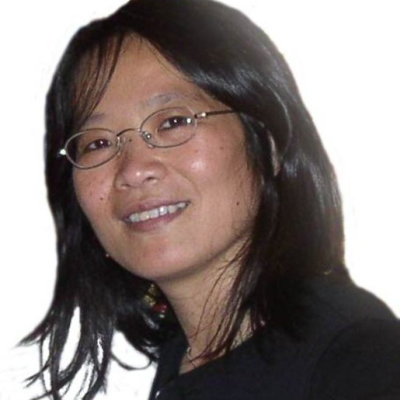
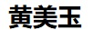

| 
| Mei-Yuh Hwang 
Affiliate Professor at EE Department
University of Washington (UW)
mhwang at ee dot washington dot edu
|
|  |
|
|
Mei-Yuh received her PhD in Computer Science from Carnegie Mellon
University in 1993 and had worked at Microsoft in U.S. and in China
for 18 years, publishing numerous conference and journal papers,
and delivering industry products in speech recognition, machine
translation, and language understanding. Additionally she spent four years at Uiniversity of Washington on Mandarin speech recognition for DARPA EARS and GALE projects
during 2004-2008, and four years at an AI startup, Mobvoi, from 2016 through early 2020.
She is an IEEE fellow,
who is passionate in bridging the gap between academia and
industry. She is currently with Microsoft MSAI team.
Microsoft Search, Assistant, and Intelligence (MSAI), WA, 4/2020
Enhance intelligence across Microsoft Office products, in search and assistants.
Mobvoi AI Lab, WA, 2016-2020
Mobvoi makes speech-enabled
smart IoT
devices, from hardware to software, all in-house.
Though a young company
that focuses on industry products, we are actively participating in
our speech research community with our limited resources.
Our publications can be found in Mobvoi publications.
Spoken language understanding for Cortana, Microsoft China, 2012-2015
To deliver non-English Cortana without human annotated data,
Mei-Yuh designed
an adapted translation algorithm which
offered both paraphrasing and generalization capabilities
with required slot tags.
The protoype model was further improved via
iterative data augmentation using RNN and newly logged data.
The impressive success of Chinese Cortana gained much attention within China, and sparked the development of
personal assistants and AI across China.
Mei-Yuh continued to contribute to Microsoft cognitive services:
Speech recognition and machine translation at Microsoft and UW, WA, 1994-2012
Sphinx-II was ported to Microsoft on Windows desktop, Office, and Microsoft Speech Server SDK,
for the recognition of multiple languages during 1994-2004.
From 2004-2008, Mei-Yuh led the DARPA EARS and GALE Mandarin speech recongition projects
at University of Washington (UW). Her IEEE paper
was a gold reference guide on building a strong Mandarin
speech recognizer.
In 2008-2012, She co-built Bing Translator automated training infrastructure,
including the design and implementation of
map-reduce parallel processing, based on DryadLink.
She further designed and implemented
Bing Translation Hub for customized vertical-domain translation.
SPHINX-II speech recognition at CMU, PA, 1987-1993
Mei-Yuh was the first to propose
Markov state clustering based on decision trees for continuous speech recognition. The idea
of shared states (or
senones as Mei-Yuh named it in 1992) has been widely adopted for two decades since its inception, until recent years when end-to-end neural-based speech recognition such as RNN-T and transformers is gaining ground.
Awards
- 2019, IEEE Fellow
- 2010, Microsoft Gold Star Award from Microsoft Research, Redmond, WA
- 1992, Allen Newell Research Excellence Medal, Pittsburgh, Carnegie Mellon University
- 1986, Phi Tao Phi Scholastic Honor Society, recommended by National Taiwan University
Professional Services
- 2015-2018: IEEE ISCSLP steering committee
- 2013: IEEE associate editor for Transactions on Audio, Speech, and Language Processing (ASLP)
- 2011: Technical Chair of IWSLT
- 1998: Publicity Chair IEEE ICASSP
- Reviewers for IEEE Transactions on ASLP
- Technical committee for ICASSP, Interspeech, ISCSLP, ACL, NAACL
Invited Talks
- 2020: WeCNLP Summit, Seattle online.
- 2019: Northwestern Polytechnical University, Xi-an, China
- 2018 April: Yuanchuan Telephony company, Taiwan
- 2017: UWEE
Research Colloquium Talk
- 2017: Panelist,
CMU Summit
- 2017: Talk at Southwest Forestry Univerisity, Kunming, China
- 2017: Talk at Soochow University, Suzhou, China
- 2015: Talk at Soochow University, Suzhou, China
- 2014: Talk at University of Science and Technology of China, Suzhou campus
- 2014: Keynote speech at PhD Forum, Northwestern Polytechnical University, Xi-an, China
- 1994-2003: Lecturer at National Taiwan University, Academia Sinica, and ITRI, Taiwan
- 1993: Lecturer at IBM Gaithersburg
Education
- PhD, Computer Science, Carnegie Mellon University, December 1993.
- BA, Computer Science, National Taiwan University, June 1986.